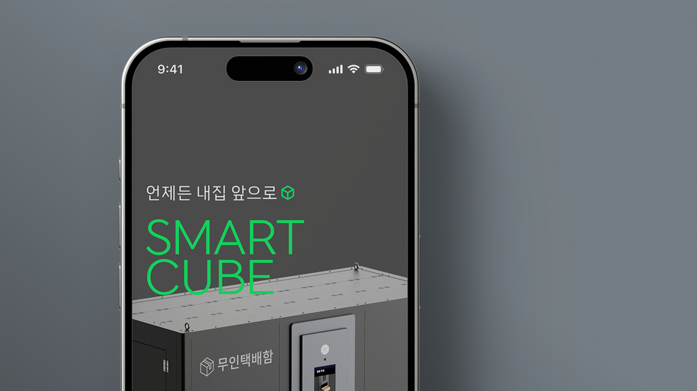
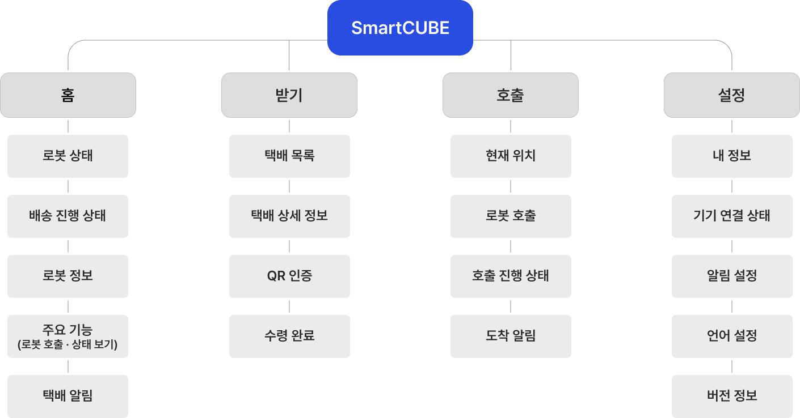
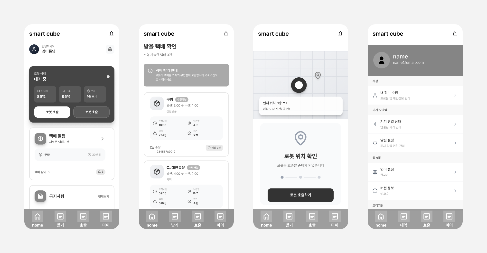
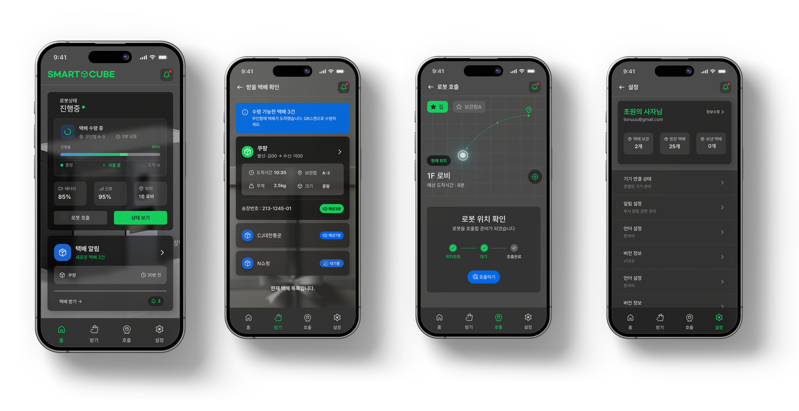

Smart
CUBE
공동주택 내 로봇 배송 경험을 위한
모바일 UX/UI 디자인
Figma
UI 100%

복잡한 로봇 배송 과정을 하나의 모바일 경험으로 설계했습니다.
SmartCUBE는 공동주택 내 자율주행 배송 로봇과
무인 택배함을 연동한 스마트 배송 서비스입니다.
사용자는 앱에서 택배 도착 알림을 확인하고
집 앞까지 배송을 요청하거나,
집에서 택배 발송을 위해 로봇을 호출할 수 있습니다.
여러 단계로 이루어진 배송 과정을 직관적인 화면 구조와
실시간 상태 정보로 단순화하여
누구나 쉽게 사용할 수 있는 UX를 설계했습니다.
복잡한 배송 과정
택배 수령과 발송 과정이 여러 단계로 이루어져 사용자가 현재 진행 상태를 이해하기 어려움
로봇 상태 확인
로봇 위치와 이동 상태를 직관적으로 확인하기 어려워 호출 과정에 대한 불안감이 발생
분산된 기능 구조
택배 확인, 로봇 호출, 배송 진행, 설정 기능이 분리되어 원하는 기능까지 이동하는 과정이 복잡함
UX / UI Design
User Flow, IA, 로봇 호출 및 배송 UX, Mobile UI와 Design System 설계
정보 구조부터 화면 설계까지 배송 경험의 전체 흐름을 정의했습니다.
로봇 배송이라는 새로운 서비스를 사용자가 어렵지 않게 이용할 수 있도록 서비스 구조를 먼저 정의하고 화면을 설계했습니다.
서비스를 홈 · 받기 · 호출 · 설정의
4개 영역으로 구성하고,
각 화면의 핵심 기능을 계층적으로 정의했습니다.
사용자가 필요한 기능에 빠르게 접근할 수 있도록
서비스의 정보 구조와 화면 간 관계를 설계했습니다.

핵심 기능을 빠르고 직관적으로 사용할 수 있도록
화면 구조와 레이아웃을 설계했습니다.
배송 상태와 로봇 호출 과정에서 필요한 정보를
우선순위에 따라 배치하여 사용 흐름을 단순화했습니다.

와이어프레임을 기반으로 핵심 기능의 사용성과 정보 전달을 고려해 최종 모바일 UI를 구현했습니다.

배송 상태와 로봇 호출 과정을 직관적인 흐름으로 연결했습니다.
사용자가 택배를 확인하는 순간부터
로봇을 호출하고 배송 결과를 확인하는 과정까지
하나의 서비스 흐름으로 연결했습니다.
현재 배송 상태와 로봇의 이동 정보를
화면에서 빠르게 파악할 수 있도록 구성하여
새로운 배송 방식에 대한 사용자의 불안감을 줄이고
서비스 이용 과정을 쉽게 이해할 수 있도록 설계했습니다.
Delivery
택배 도착 정보를 확인하고 배송 요청으로 자연스럽게 연결
Robot Call
필요한 시점에 로봇을 호출하고 호출 상태를 확인
Live Status
배송 진행 상황과 로봇의 상태를 실시간으로 확인
Completion
배송 완료까지의 상태 변화를 명확하게 전달
복잡한 로봇 배송 과정을 하나의 서비스 경험으로 통합했습니다.
택배 확인부터 로봇 호출,
배송 진행과 완료까지 이어지는 복잡한 과정을
하나의 서비스 흐름으로 통합했습니다.
사용자가 현재 상태를 직관적으로 이해하고
필요한 기능에 빠르게 접근할 수 있도록
정보 구조와 화면 경험을 설계했습니다.
Simplified Structure
홈 · 받기 · 호출 · 설정으로 핵심 기능을 명확하게 분류
Connected Experience
택배 확인부터 배송 완료까지 하나의 흐름으로 연결
Clear Feedback
배송 진행과 로봇 상태를 직관적으로 확인할 수 있도록 설계
Easy Control
복잡한 배송 기능을 모바일 환경에서 쉽게 사용할 수 있도록 설계
새로운 배송 서비스를 익숙한 사용자 경험으로 만들었습니다.
이번 프로젝트에서는 로봇 배송이라는
새로운 서비스를 사용자가 어렵지 않게
이용할 수 있는 경험을 만드는 데 집중했습니다.
배송 상태와 로봇 호출 과정을 직관적으로 연결하여
사용자가 현재 상황을 쉽게 이해할 수 있도록
UX를 설계했습니다.